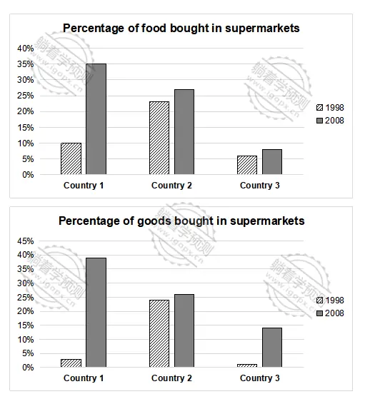

The charts below show the percentage of food and goods bought in supermarkets in European countries in 1998 and 2008.
Summarise the information by selecting and reporting the main features, and make comparisons where relevant.
Write at least 150 words.

The two bar charts compare the percentages of food and other goods purchased from supermarkets in three European countries—Country 1, Country 2, and Country 3—in 1998 and 2008.
Overall, the proportion of both food and other goods bought in supermarkets increased across all three countries over the ten-year period. While Country 2 recorded the highest figures in 1998, Country 1 surpassed the others by 2008, achieving the highest percentages in both categories.
Regarding food purchases, Country 1 experienced a substantial rise, increasing from around 10% in 1998 to 35% in 2008, representing the largest growth among the three nations. Country 2 also witnessed a moderate increase, with the figure rising from approximately 23% to 28%. In contrast, Country 3 saw only a slight growth, climbing from 6% to just under 10% over the same period.
In terms of other goods, Country 1 started at about less than 5% in 1998 and rose sharply to nearly 40% in 2008, marking the most significant increase in this category. Country 2 experienced a gradual growth, from 24% to 26% over the decade. Although Country 3 recorded a considerable rise from just 1% to around 15%, it remained the lowest among the three countries in both years.